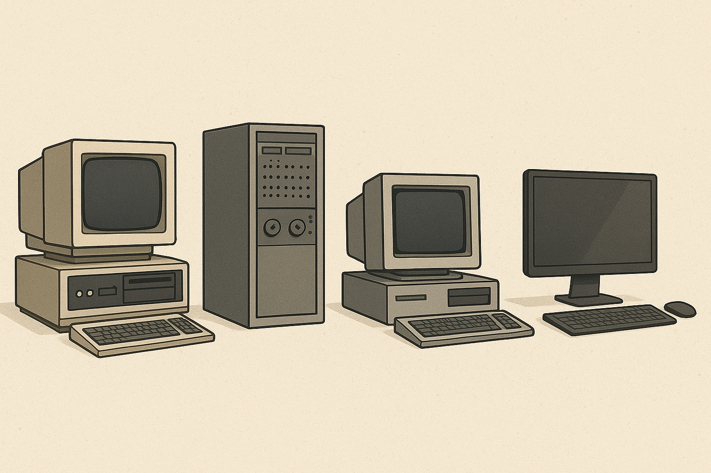

Історія обчислювальної техніки — це шлях від перших механічних пристроїв до сучасних комп’ютерів. У Давній Греції створили Антикитерський механізм (І ст. до н.е.), який вважається першим аналоговим комп’ютером. У XVII ст. з’явилися перші механічні лічильні машини Паскаля та Лейбніца. Сучасна техніка базується на електронних і цифрових технологіях, що забезпечують швидке опрацювання великих обсягів даних.
Якщо ваш браузер не підтримує HTML5 відео, скористайтесь посиланням.